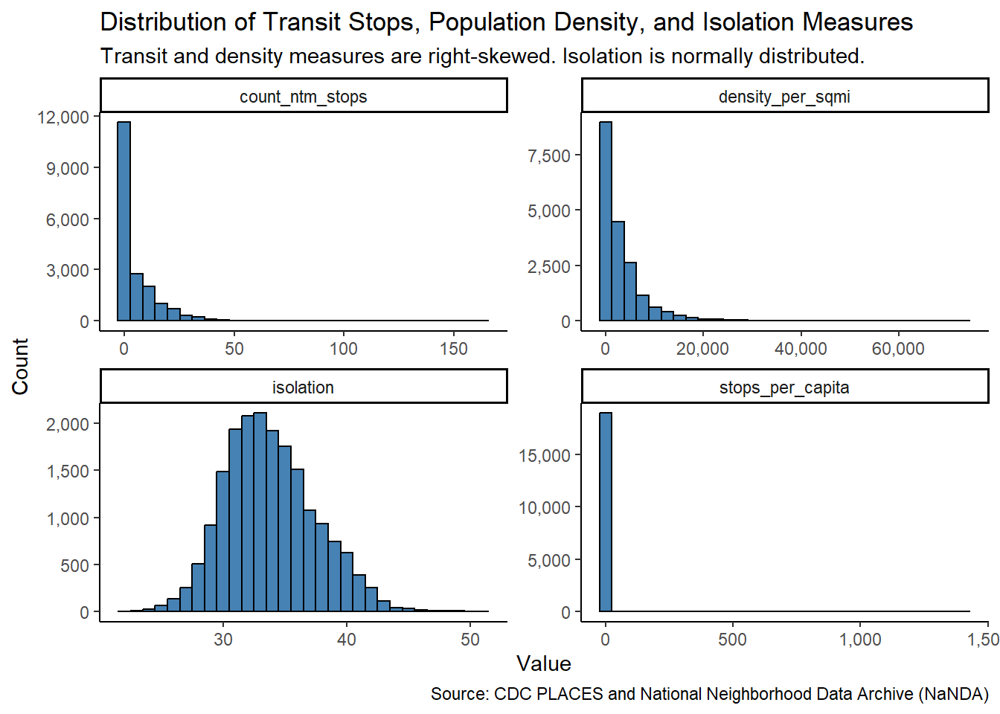
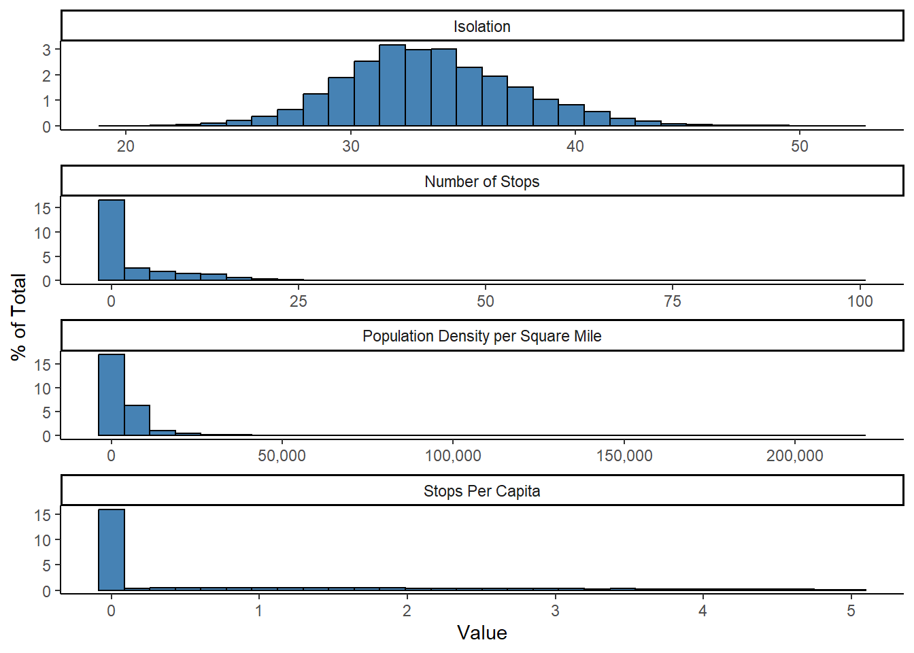
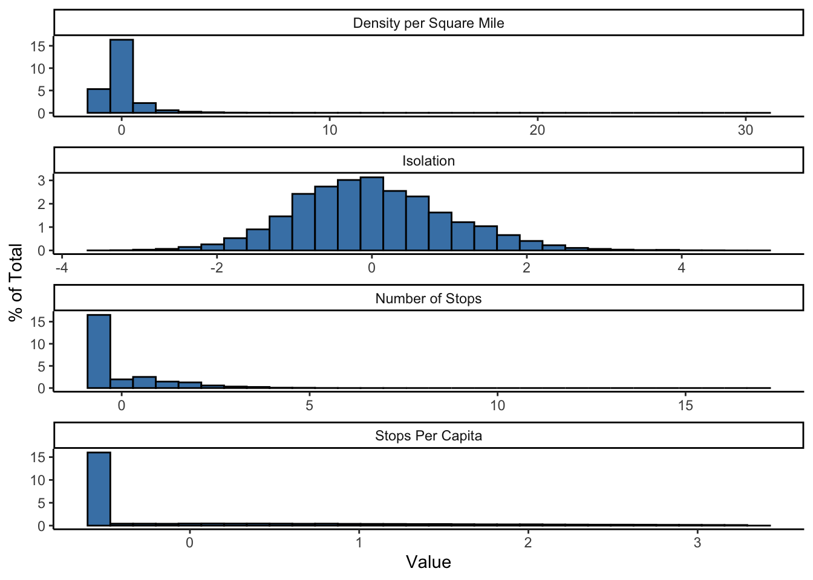
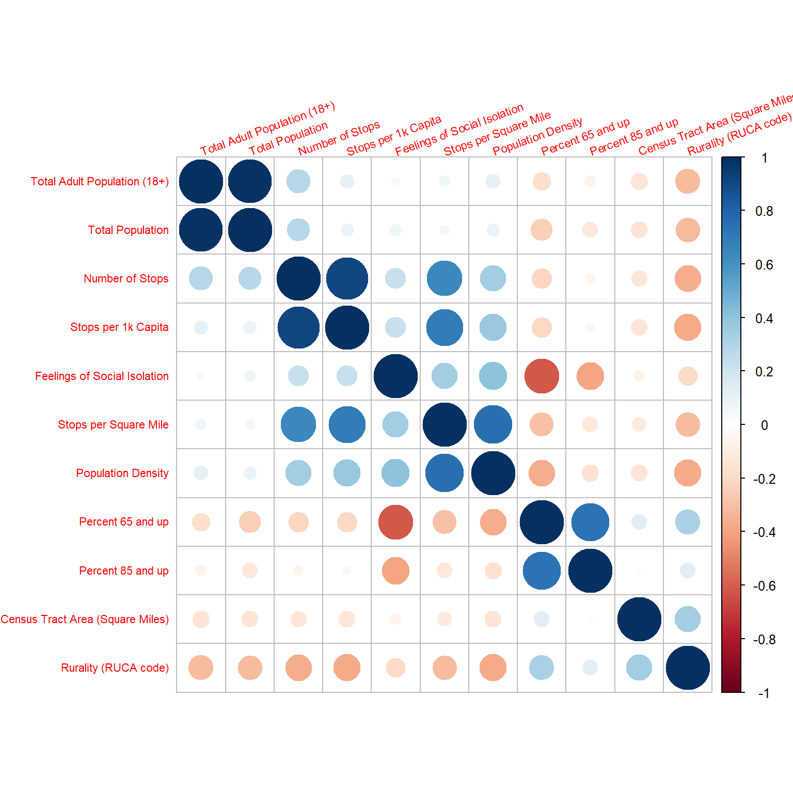

stateabbr locationname data_value totalpopulation
1 FL 12086001801 34.9 3924
2 FL 12086007200 31.0 2537
3 FL 12086002202 32.6 4725
4 FL 12086008415 26.3 5047
5 FL 12086004405 29.3 3030
6 FL 12086010213 30.1 4606Does public transportation decrease social isolation?
Load data
Load PLACES: Local Data for Better Health, Census Tract Data 2024 release using (2025) (Greenlund et al. 2022). This is 2022 data.
Get Public Transit Stops by Census Tract and ZIP Code Tabulation Area, United States, 2024 from the National Neighborhood Data Archive (NaNDA) (Pan et al. 2023).
# A tibble: 6 × 6
tract_fips20 census_tract_area20 tot_pop_2020 count_ntm_stops stops_per_capita
<chr> <dbl> <dbl> <dbl> <dbl>
1 01001020100 3.79 1941 0 0
2 01001020200 1.28 1757 0 0
3 01001020300 2.07 3694 0 0
4 01001020400 2.46 3539 0 0
5 01001020501 2.40 4306 0 0
6 01001020502 0.810 3100 0 0
# ℹ 1 more variable: stops_per_sqmile <dbl>Get 2010 USDA-ERS Rural Urban Commuting Area (RUCA) Code classification scheme for Census tracts (Paykin et al. 2022).
# A tibble: 6 × 4
tract_fips20 ruca1 ruca2 rurality
<chr> <dbl> <dbl> <chr>
1 01001020100 1 1 Urban
2 01001020200 1 1 Urban
3 01001020300 1 1 Urban
4 01001020400 1 1 Urban
5 01001020500 1 1 Urban
6 01001020600 1 1 Urban Get age by census tract from the 2020 Census (U.S. Census Bureau 2023).
# A tibble: 6 × 4
stateabbr tract_fips20 rate_65_plus rate_85_plus
<chr> <chr> <dbl> <dbl>
1 AL 01001201000 0.160 0.0158
2 AL 01001202000 0.154 0.0102
3 AL 01001203000 0.186 0.0249
4 AL 01001204000 0.226 0.0313
5 AL 01001205010 0.178 0.0134
6 AL 01001205020 0.0888 0.0058Merge data. Since there are two columns for total population, we will use the one that is more complete, totalpopulation, from the CDC PLACES data. We will also rename the columns for clarity and consistency and generate a new variable, density_per_sqmi, which is the total population divided by the area in square miles.
state_abbr fips isolation totalpopulation area_sq_miles
1 FL 12086001801 34.9 3924 0.5048869
2 FL 12086007200 31.0 2537 0.3517078
3 FL 12086002202 32.6 4725 0.6207889
4 FL 12086008415 26.3 5047 1.5695713
5 FL 12086004405 29.3 3030 0.1355257
6 FL 12086010213 30.1 4606 0.5791057
count_ntm_stops stops_per_capita stops_per_sqmile ruca rurality rate_65_plus
1 30 5.664652 59.419250 1 Urban NA
2 18 6.749156 51.178848 1 Urban NA
3 22 3.474964 35.438778 1 Urban NA
4 5 1.023961 3.185583 1 Urban NA
5 9 2.391709 66.408058 1 Urban NA
6 4 1.041938 6.907201 <NA> <NA> NA
rate_85_plus density_per_sqmi
1 NA 7772.038
2 NA 7213.375
3 NA 7611.283
4 NA 3215.528
5 NA 22357.380
6 NA 7953.643Exploratory data analysis and data preparation
Missingness
| Name | data |
| Number of rows | 63907 |
| Number of columns | 13 |
| _______________________ | |
| Column type frequency: | |
| factor | 4 |
| numeric | 9 |
| ________________________ | |
| Group variables | None |
Variable type: factor
| skim_variable | n_missing | complete_rate | ordered | n_unique | top_counts |
|---|---|---|---|---|---|
| state_abbr | 0 | 1.0 | FALSE | 40 | CA: 9070, TX: 6845, FL: 5080, OH: 3155 |
| fips | 0 | 1.0 | FALSE | 63887 | 270: 3, 040: 2, 040: 2, 040: 2 |
| ruca | 19251 | 0.7 | FALSE | 21 | 1: 31038, 2: 4003, 4: 2507, 10: 1908 |
| rurality | 19248 | 0.7 | FALSE | 3 | Urb: 31670, Sub: 6760, Rur: 6229 |
Variable type: numeric
| skim_variable | n_missing | complete_rate | mean | sd | p0 | p25 | p50 | p75 | p100 | hist |
|---|---|---|---|---|---|---|---|---|---|---|
| isolation | 0 | 1.00 | 33.72 | 3.92 | 19.50 | 31.00 | 33.50 | 36.20 | 52.60 | ▁▆▇▁▁ |
| totalpopulation | 0 | 1.00 | 4006.94 | 1683.46 | 54.00 | 2813.00 | 3820.00 | 4981.00 | 37892.00 | ▇▁▁▁▁ |
| area_sq_miles | 876 | 0.99 | 45.66 | 573.34 | 0.01 | 0.74 | 1.90 | 11.85 | 85554.74 | ▇▁▁▁▁ |
| count_ntm_stops | 876 | 0.99 | 5.31 | 9.71 | 0.00 | 0.00 | 0.00 | 8.00 | 195.00 | ▇▁▁▁▁ |
| stops_per_capita | 876 | 0.99 | 2.04 | 64.31 | 0.00 | 0.00 | 0.00 | 2.00 | 12461.54 | ▇▁▁▁▁ |
| stops_per_sqmile | 876 | 0.99 | 8.76 | 20.90 | 0.00 | 0.00 | 0.00 | 9.38 | 689.33 | ▇▁▁▁▁ |
| rate_65_plus | 38297 | 0.40 | 0.18 | 0.08 | 0.00 | 0.13 | 0.17 | 0.22 | 0.90 | ▇▆▁▁▁ |
| rate_85_plus | 38297 | 0.40 | 0.02 | 0.02 | 0.00 | 0.01 | 0.02 | 0.02 | 0.48 | ▇▁▁▁▁ |
| density_per_sqmi | 876 | 0.99 | 4003.35 | 6780.55 | 0.03 | 325.50 | 2134.24 | 4978.35 | 224278.50 | ▇▁▁▁▁ |
After filtering raw data for non-missing observations of our dependent variable, feelings of social isolation (isolation), we have 63907 observations. County FIPs and state columns are 100% complete. A small number of counties in the data have missing transit data (1.3707419 % missing) and some counties are not categorized into urban/suburban/rural categories (30.1234607 % missing). The age data has significant missingness (59.9261427 % missing).
| Name | group_by(select(data, sta… |
| Number of rows | 63907 |
| Number of columns | 2 |
| _______________________ | |
| Column type frequency: | |
| numeric | 1 |
| ________________________ | |
| Group variables | state_abbr |
Variable type: numeric
| skim_variable | state_abbr | n_missing | complete_rate | mean | sd | p0 | p25 | p50 | p75 | p100 | hist |
|---|---|---|---|---|---|---|---|---|---|---|---|
| count_ntm_stops | AK | 0 | 1 | 6.33 | 12.27 | 0 | 0 | 0 | 8.25 | 77 | ▇▁▁▁▁ |
| count_ntm_stops | AL | 0 | 1 | 2.22 | 8.79 | 0 | 0 | 0 | 0.00 | 112 | ▇▁▁▁▁ |
| count_ntm_stops | AZ | 0 | 1 | 5.86 | 8.56 | 0 | 0 | 2 | 9.00 | 79 | ▇▁▁▁▁ |
| count_ntm_stops | CA | 0 | 1 | 7.74 | 8.50 | 0 | 1 | 6 | 11.00 | 126 | ▇▁▁▁▁ |
| count_ntm_stops | CT | 876 | 0 | NaN | NA | NA | NA | NA | NA | NA | |
| count_ntm_stops | DC | 0 | 1 | 20.41 | 21.25 | 1 | 9 | 14 | 23.75 | 162 | ▇▁▁▁▁ |
| count_ntm_stops | DE | 0 | 1 | 9.24 | 9.69 | 0 | 1 | 7 | 13.00 | 47 | ▇▂▁▁▁ |
| count_ntm_stops | FL | 0 | 1 | 6.35 | 9.79 | 0 | 0 | 1 | 10.00 | 108 | ▇▁▁▁▁ |
| count_ntm_stops | GA | 0 | 1 | 3.96 | 9.82 | 0 | 0 | 0 | 0.00 | 77 | ▇▁▁▁▁ |
| count_ntm_stops | IA | 0 | 1 | 6.96 | 15.10 | 0 | 0 | 0 | 9.00 | 170 | ▇▁▁▁▁ |
| count_ntm_stops | ID | 0 | 1 | 2.78 | 5.73 | 0 | 0 | 0 | 3.00 | 41 | ▇▁▁▁▁ |
| count_ntm_stops | IN | 0 | 1 | 2.61 | 6.87 | 0 | 0 | 0 | 0.00 | 61 | ▇▁▁▁▁ |
| count_ntm_stops | KS | 0 | 1 | 2.46 | 6.59 | 0 | 0 | 0 | 0.00 | 71 | ▇▁▁▁▁ |
| count_ntm_stops | KY | 0 | 1 | 1.34 | 4.89 | 0 | 0 | 0 | 0.00 | 42 | ▇▁▁▁▁ |
| count_ntm_stops | MA | 0 | 1 | 8.12 | 9.61 | 0 | 0 | 5 | 12.00 | 66 | ▇▂▁▁▁ |
| count_ntm_stops | MD | 0 | 1 | 11.00 | 16.09 | 0 | 0 | 4 | 16.00 | 195 | ▇▁▁▁▁ |
| count_ntm_stops | ME | 0 | 1 | 2.42 | 7.61 | 0 | 0 | 0 | 0.00 | 54 | ▇▁▁▁▁ |
| count_ntm_stops | MI | 0 | 1 | 4.03 | 9.04 | 0 | 0 | 0 | 1.00 | 84 | ▇▁▁▁▁ |
| count_ntm_stops | MN | 0 | 1 | 7.57 | 13.11 | 0 | 0 | 0 | 12.00 | 103 | ▇▁▁▁▁ |
| count_ntm_stops | MO | 0 | 1 | 4.15 | 8.11 | 0 | 0 | 0 | 5.00 | 62 | ▇▁▁▁▁ |
| count_ntm_stops | MS | 0 | 1 | 0.00 | 0.00 | 0 | 0 | 0 | 0.00 | 0 | ▁▁▇▁▁ |
| count_ntm_stops | MT | 0 | 1 | 1.42 | 5.79 | 0 | 0 | 0 | 0.00 | 40 | ▇▁▁▁▁ |
| count_ntm_stops | NC | 0 | 1 | 2.00 | 7.12 | 0 | 0 | 0 | 0.00 | 90 | ▇▁▁▁▁ |
| count_ntm_stops | NE | 0 | 1 | 3.91 | 9.44 | 0 | 0 | 0 | 0.00 | 65 | ▇▁▁▁▁ |
| count_ntm_stops | NH | 0 | 1 | 2.01 | 7.00 | 0 | 0 | 0 | 0.00 | 68 | ▇▁▁▁▁ |
| count_ntm_stops | NJ | 0 | 1 | 7.66 | 7.94 | 0 | 1 | 6 | 11.00 | 64 | ▇▂▁▁▁ |
| count_ntm_stops | NM | 0 | 1 | 5.33 | 9.21 | 0 | 0 | 0 | 8.00 | 56 | ▇▂▁▁▁ |
| count_ntm_stops | NV | 0 | 1 | 7.32 | 10.15 | 0 | 0 | 5 | 10.00 | 104 | ▇▁▁▁▁ |
| count_ntm_stops | OH | 0 | 1 | 5.35 | 9.52 | 0 | 0 | 0 | 8.00 | 114 | ▇▁▁▁▁ |
| count_ntm_stops | OK | 0 | 1 | 2.54 | 5.77 | 0 | 0 | 0 | 2.00 | 77 | ▇▁▁▁▁ |
| count_ntm_stops | RI | 0 | 1 | 14.52 | 11.22 | 0 | 6 | 14 | 20.00 | 61 | ▇▇▂▁▁ |
| count_ntm_stops | SC | 0 | 1 | 3.23 | 7.28 | 0 | 0 | 0 | 2.00 | 89 | ▇▁▁▁▁ |
| count_ntm_stops | TN | 0 | 1 | 5.04 | 11.83 | 0 | 0 | 0 | 3.00 | 131 | ▇▁▁▁▁ |
| count_ntm_stops | TX | 0 | 1 | 2.97 | 7.94 | 0 | 0 | 0 | 0.00 | 128 | ▇▁▁▁▁ |
| count_ntm_stops | UT | 0 | 1 | 8.12 | 10.03 | 0 | 0 | 5 | 13.00 | 102 | ▇▁▁▁▁ |
| count_ntm_stops | VT | 0 | 1 | 13.18 | 18.01 | 0 | 2 | 7 | 19.00 | 163 | ▇▁▁▁▁ |
| count_ntm_stops | WA | 0 | 1 | 9.98 | 12.32 | 0 | 0 | 6 | 16.00 | 111 | ▇▁▁▁▁ |
| count_ntm_stops | WI | 0 | 1 | 5.36 | 11.08 | 0 | 0 | 0 | 7.00 | 97 | ▇▁▁▁▁ |
| count_ntm_stops | WV | 0 | 1 | 0.02 | 0.16 | 0 | 0 | 0 | 0.00 | 2 | ▇▁▁▁▁ |
| count_ntm_stops | WY | 0 | 1 | 0.00 | 0.00 | 0 | 0 | 0 | 0.00 | 0 | ▁▁▇▁▁ |
Note that all counties in Connecticut (CT) have missing transit data, which is why we will remove it from our analysis. The state abbreviation “CT” has 876 rows with missing transit data. The following states are completely missing for the dataset (no CDC PLACES isolation data available): AR, CO, HI, IL, LA, NY, ND, OR, PA, SD, VA.
Revising data by filteringing out missing information (dropped observations are documented in our paper).
| Name | df_nonmiss |
| Number of rows | 63031 |
| Number of columns | 13 |
| _______________________ | |
| Column type frequency: | |
| factor | 4 |
| numeric | 9 |
| ________________________ | |
| Group variables | None |
Variable type: factor
| skim_variable | n_missing | complete_rate | ordered | n_unique | top_counts |
|---|---|---|---|---|---|
| state_abbr | 0 | 1.00 | FALSE | 39 | CA: 9070, TX: 6845, FL: 5080, OH: 3155 |
| fips | 0 | 1.00 | FALSE | 63011 | 270: 3, 040: 2, 040: 2, 040: 2 |
| ruca | 18375 | 0.71 | FALSE | 21 | 1: 31038, 2: 4003, 4: 2507, 10: 1908 |
| rurality | 18372 | 0.71 | FALSE | 3 | Urb: 31670, Sub: 6760, Rur: 6229 |
Variable type: numeric
| skim_variable | n_missing | complete_rate | mean | sd | p0 | p25 | p50 | p75 | p100 | hist |
|---|---|---|---|---|---|---|---|---|---|---|
| isolation | 0 | 1.00 | 33.73 | 3.92 | 19.50 | 31.00 | 33.50 | 36.20 | 52.60 | ▁▆▇▁▁ |
| totalpopulation | 0 | 1.00 | 4005.42 | 1686.50 | 54.00 | 2810.00 | 3817.00 | 4979.00 | 37892.00 | ▇▁▁▁▁ |
| area_sq_miles | 0 | 1.00 | 45.66 | 573.34 | 0.01 | 0.74 | 1.90 | 11.85 | 85554.74 | ▇▁▁▁▁ |
| count_ntm_stops | 0 | 1.00 | 5.31 | 9.71 | 0.00 | 0.00 | 0.00 | 8.00 | 195.00 | ▇▁▁▁▁ |
| stops_per_capita | 0 | 1.00 | 2.04 | 64.31 | 0.00 | 0.00 | 0.00 | 2.00 | 12461.54 | ▇▁▁▁▁ |
| stops_per_sqmile | 0 | 1.00 | 8.76 | 20.90 | 0.00 | 0.00 | 0.00 | 9.38 | 689.33 | ▇▁▁▁▁ |
| rate_65_plus | 37421 | 0.41 | 0.18 | 0.08 | 0.00 | 0.13 | 0.17 | 0.22 | 0.90 | ▇▆▁▁▁ |
| rate_85_plus | 37421 | 0.41 | 0.02 | 0.02 | 0.00 | 0.01 | 0.02 | 0.02 | 0.48 | ▇▁▁▁▁ |
| density_per_sqmi | 0 | 1.00 | 4003.35 | 6780.55 | 0.03 | 325.50 | 2134.24 | 4978.35 | 224278.50 | ▇▁▁▁▁ |
Now there are 63031 observations remaining after removing Connecticut, and there are no missing isolation or transit data. We note a few census tracts with very low populations (e.g., 1 person in central park or 17 people in the national mall) that may not be representative of the general population.
Distribution
Viewing the distribution of our modeling variables.

| Name | select(df_nonmiss, stops_… |
| Number of rows | 63031 |
| Number of columns | 3 |
| _______________________ | |
| Column type frequency: | |
| numeric | 3 |
| ________________________ | |
| Group variables | None |
Variable type: numeric
| skim_variable | n_missing | complete_rate | mean | sd | p0 | p25 | p50 | p75 | p100 | hist |
|---|---|---|---|---|---|---|---|---|---|---|
| stops_per_capita | 0 | 1 | 2.04 | 64.31 | 0.00 | 0.0 | 0.00 | 2.00 | 12461.54 | ▇▁▁▁▁ |
| density_per_sqmi | 0 | 1 | 4003.35 | 6780.55 | 0.03 | 325.5 | 2134.24 | 4978.35 | 224278.50 | ▇▁▁▁▁ |
| count_ntm_stops | 0 | 1 | 5.31 | 9.71 | 0.00 | 0.0 | 0.00 | 8.00 | 195.00 | ▇▁▁▁▁ |
The column stops_per_capita has high outliers (e.g., 12k stops per capita observation when mean value is 2). We plot the data with outliers (defined as Q3 + 1.5 * IQR) removed.**

We also investigate distributions of the centered and scaled data.

Correlation
The figure below shows that feelings of social isolation among adults is most correlated with population density, number of stops, stops per square mile, and rurality. Positive correlation indicates that the denser an area is, the higher the rate of feeling social isolation, which is counterintuitive to our hypothesis. Social isolation is also positively associated with the count of transit stops (total count in census tract and adjusted per square mile)–also counterintuitive. Social isolation is slightly negatively correlated with rurality as measured by RUCA code, where a higher prevalence of this feeling tends to be associated with a more urban, less rural area, which is also inconsistent with our expectation.

There are no columns with pair-wise correlations above the threshold .75, so we don’t need to filter out any highly correlated predictor variables.
integer(0)Analysis
First, we will fit a linear model to the data for simplicity.
Call:
lm(formula = isolation ~ ., data = df_predictors)
Residuals:
Min 1Q Median 3Q Max
-11.0938 -1.8674 -0.0829 1.7961 14.0631
Coefficients:
Estimate Std. Error t value Pr(>|t|)
(Intercept) 3.894e+01 9.811e-02 396.936 < 2e-16 ***
totalpopulation -1.975e-04 1.346e-05 -14.671 < 2e-16 ***
area_sq_miles 1.812e-04 7.611e-05 2.381 0.017261 *
count_ntm_stops 4.320e-02 3.081e-03 14.020 < 2e-16 ***
stops_per_capita -1.376e-03 1.182e-03 -1.164 0.244303
stops_per_sqmile 5.936e-03 1.752e-03 3.387 0.000708 ***
ruralitySuburban 6.519e-01 6.292e-02 10.362 < 2e-16 ***
ruralityRural 7.232e-01 6.139e-02 11.782 < 2e-16 ***
rate_65_plus -3.221e+01 4.692e-01 -68.661 < 2e-16 ***
rate_85_plus 2.233e+01 2.039e+00 10.953 < 2e-16 ***
density_per_sqmi 1.199e-04 4.655e-06 25.751 < 2e-16 ***
---
Signif. codes: 0 '***' 0.001 '**' 0.01 '*' 0.05 '.' 0.1 ' ' 1
Residual standard error: 2.761 on 18999 degrees of freedom
(44021 observations deleted due to missingness)
Multiple R-squared: 0.4435, Adjusted R-squared: 0.4432
F-statistic: 1514 on 10 and 18999 DF, p-value: < 2.2e-16totalpopulation: For each additional person in a census tract, the probability who report feeling socially isolated decreases by 0.02%.area_sq_miles: For each additional square mile in a census tract, the probability who report feeling socially isolated increases by 0.02%.count_ntm_stops: For each additional transit stop in a census tract, the probability who report feeling socially isolated increases by 4.32%.stops_per_sqmile: For each additional stop per square mile, the probability who report feeling socially isolated in a census tract increases by 0.59%.ruralitySuburban: If the census tract is considered suburban, the probability who report feeling socially isolated increases by 65.19% compared to an urban tract.ruralityRural: If the census tract is considered rural, the probability who report feeling socially isolated increases by 72.32% compared to an urban tract.rate_65_plus: For each additional percentage point of the population aged 65 and older, the probability who report feeling socially isolated in a tract decreases by 3221.33%.rate_85_plus: For each additional percentage point of the population aged 85 and older, the probability who report feeling socially isolated in a tract increases by 2233.38%.density_per_sqmi: For each additional person per square mile, the probability who report feeling socially isolated in a tract increases by 0.01%.stops_per_capitawas insignificant, indicating that the number of transit stops per capita does not significantly affect feelings of social isolation in this model.
The model’s R-squared value indicates that approximately 44.35% of the variance in feelings of social isolation can be explained by the model.
Next, we try bucketing the data by RUCA code. We will use rurality that is a factor with three levels: urban, suburban, and rural.
Data Dictionary
isolation-
Probability among adults who report always/usually/sometimes feeling socially isolated. Source: CDC PLACES.
totalpopulation-
Total population of Census 2020. Source: CDC PLACES.
count_ntm_stops-
Count of transit stops reported to National Transit Map as of 1/2023. Source: NaNDA.
stops_per_capita-
Transit stops per 1000 people. Source: NaNDA.
stops_per_sqmile-
Transit stops per square mile. Source: NaNDA.
area_sq_miles-
Census land area, square miles. Source: NaNDA.
ruca-
Secondary RUCA codes, 2010. Source: 2010 USDA-ERS.
Code Classification description 1 Metropolitan area core: primary flow within an urbanized area (UA) 1.0 No additional code 1.1 Secondary flow 30% to 50% to a larger UA 2 Metropolitan area high commuting: primary flow 30% or more to a UA 2.0 No additional code 2.1 Secondary flow 30% to 50% to a larger UA 3 Metropolitan area low commuting: primary flow 10% to 30% to a UA 3.0 No additional code 4 Micropolitan area core: primary flow within an urban cluster of 10,000 to 49,999 (large UC) 4.0 No additional code 4.1 Secondary flow 30% to 50% to a UA 5 Micropolitan high commuting: primary flow 30% or more to a large UC 5.0 No additional code 5.1 Secondary flow 30% to 50% to a UA 6 Micropolitan low commuting: primary flow 10% to 30% to a large UC 6.0 No additional code 7 Small town core: primary flow within an urban cluster of 2,500 to 9,999 (small UC) 7.0 No additional code 7.1 Secondary flow 30% to 50% to a UA 7.2 Secondary flow 30% to 50% to a large UC 8 Small town high commuting: primary flow 30% or more to a small UC 8.0 No additional code 8.1 Secondary flow 30% to 50% to a UA 8.2 Secondary flow 30% to 50% to a large UC 9 Small town low commuting: primary flow 10% to 30% to a small UC 9.0 No additional code 10 Rural areas: primary flow to a tract outside a UA or UC 10.0 No additional code 10.1 Secondary flow 30% to 50% to a UA 10.2 Secondary flow 30% to 50% to a large UC 10.3 Secondary flow 30% to 50% to a small UC 99 Not coded: Census tract has zero population and no rural-urban identifier information
References
Brenden Smith. 2025. “CDCPLACES: Access the ’CDC PLACES’ API.” https://CRAN.R-project.org/package=CDCPLACES.
Greenlund, Kurt J., Hua Lu, Yan Wang, Kevin A. Matthews, Jennifer M. LeClercq, Benjamin Lee, and Susan A. Carlson. 2022. “PLACES: Local Data for Better Health.” Preventing Chronic Disease 19 (June). https://doi.org/10.5888/pcd19.210459.
Pan, Longrong, Robert Melendez, Philippa Clarke, Grace Noppert, Iris Gomez-Lopez, Megan Chenoweth, Anam Khan, Mao Li, and Lindsay Gypin. 2023. “National Neighborhood Data Archive (NaNDA): Public Transit Stops by Census Tract and ZIP Code Tabulation Area, United States, 2016-2018 and 2024.” ICPSR - Interuniversity Consortium for Political; Social Research. https://doi.org/10.3886/ICPSR38605.V2.
Paykin, Susan, Moksha Menghaney, Qinyun Lin, and Marynia Kolak. 2022. Spaykin/Rural-Urban-Classification: Rural, Suburban, Urban Classification for Small Area Analysis. Zenodo. https://doi.org/10.5281/ZENODO.6359701.
U.S. Census Bureau. 2023. “2020 Census Demographic and Housing Characteristics File (DHC).” Washington, DC: U.S. Census Bureau.